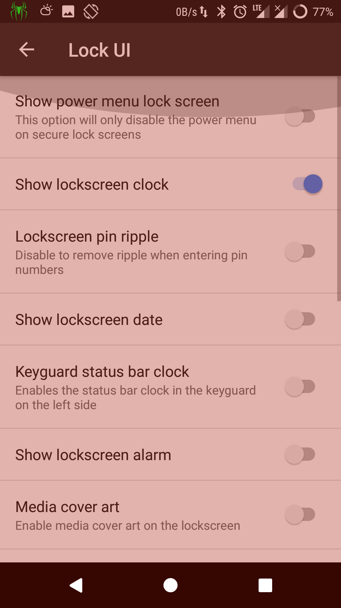
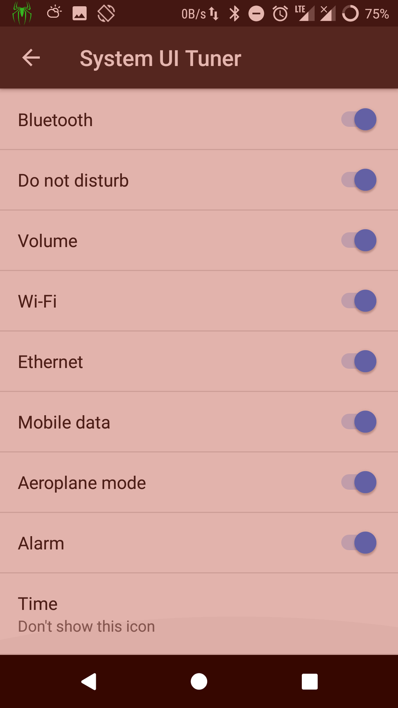

Last year, I wrote a blog post on how to remove clock from lock screen and status bar if xposed is installed on your android device. You can also do this without xposed if you are using RR(Resurrection Remix) as it comes with a lot of inbuilt customization.
Remove Clock From LockScreen
To remove clock from lockscreen, go to Settings -> Configurations -> Lock screen -> Show lock screen lock.

Remove Time From StatusBar
To remove clock from status bar, go to Settings -> Configurations -> Status bar -> System UI tuner -> Time -> Dont show this icon.

Once you do this, you will have a clean lockscreen and statusbar without any date or time them.
Most laptops and smart phones(Android/iPhone) have builtin Bluetooth modules. We can use this bluetooth module to communicate with each other or with other bluetooth modules like HC-05 or HM-10.
In this article, we will learn how to send data between laptop and android bluetooth.
First, we need to pair with a bluetooth device to send information. From Ubuntu, we can pair to a Bluetooth device from Bluetooth settings. Alternatively, we can also use CLI to do the same.
$ bluetoothctl
[NEW] Controller 24:0A:64:D7:99:AC asus [default][NEW] Device 94:E9:79:BB:F8:3A DESKTOP-C4ECO3K
[NEW] Device 88:79:7E:7B:4C:87 athene
[NEW] Device 94:65:2D:8C:2E:10 OnePlus 5[NEW] Device 98:0C:A5:61:D5:64 Lenovo VIBE K5 Plus
[NEW] Device AC:C3:3A:A0:CE:EF Galaxy J2
[NEW] Device 98:D3:35:71:02:B3 HC-05
[bluetooth]# power on
Changing power on succeeded
[bluetooth]# agent on
Agent registered
[bluetooth]# default-agent
Default agent request successful
[bluetooth]# scan on
Discovery started
[CHG] Controller 24:0A:64:D7:99:AC Discovering: yes
[CHG] Device 94:E9:79:BB:F8:3A RSSI: -88
[CHG] Device 88:79:7E:7B:4C:87 RSSI: -66
[bluetooth]# pair 88:79:7E:7B:4C:87
Attempting to pair with 88:79:7E:7B:4C:87
[CHG] Device 88:79:7E:7B:4C:87 Paired: yes
Pairing successful
To communicate with paired devices, we will use RFCOMM protocol. RFCOMM is just a serial port emulation and provides reliable data tranfer like TCP.
From ubuntu, lets open a port for communication.
$ sudo rfcomm listen /dev/rfcomm0 3
From Android, we have to connect to ubuntu. For this, we can use Roboremo app which supports RFCOMM.
$ sudo rfcomm listen /dev/rfcomm0 3
Waiting for connection on channel 3
Connection from 88:79:7E:7B:4C:87 to /dev/rfcomm0
Press CTRL-C for hangup
Once the connection is established, we can communicate between devices.
In Unix like systems, OS provides a device file as an interface for device driver. To send and read messages from Linux or Mac is as easy as reading and writing to a file.
# to send message to bluetooth
$ echo'hello from ubuntu' > /dev/rfcomm0
We can see the received messages on Android
We can also send messages from android and read from ubuntu.
# to read messages from bluetooth
$ cat /dev/rfcomm0
hello from android
This way, we can communicate with any bluetooth module using a laptop or a smart phone.
Today I have attended AIAI summit 2017 in Bangalore. Amazon started this summit to network with academia, industry data scientists and showcase amazon's work in machine learning.
There were 4 talks and 20 poster presentations. Most of them were scholars from IITB, IITM, IISC, IITH, one talk by CMU professor and remaining talks by Amazon.
Amazon team talked about the problems they are solving with machine learning like auto correcting address, suggesting right size for shoes/apparel, answering questions on products e.t.c.
People from academia talked about the research work they are doing and their results.
I have been working on Telugu OCR in the past few months. There were 3 poster presentations regarding indic languages. Even though a lot of papers were published in the past, there is no end-to-end OCR with good accuracy (>98%) for Indic languages. It is good to see Indic languages getting traction in deep learning.
To program Arduino, we can use Arduino IDE which facilitates writing and uploading code to the board.
If we are using a text editor for programming, it will have lot of customisations which speed up development process. In such case, it is better to use same text editor for arduino programming too.
I use Emacs as IDE and there is arduino mode for emacs which provides syntax highlighting and some useful utilites to write arduino code. We can find such packages for other editors also.
Arduino also provides cli interface to upload code to arduino. To upload code, we need to specify port, board and the code to upload.
In Linux system, to upload a file called foo.ino, we can run
Most Indian languages have strong consonant-vowel structure which combine to give syllables. These syllables are written as one continuous ligature and they require complex text rendering (CTL) for type setting.
Writing OCR (Optical Character Recognistion) software for CTL scripts is a challenging task as segmentation is hard. Because of this overall accuracy drops drastically.
A better approach is to use Connectionist Temporal Classification (CTC) which can identify unsegmented sequence directly as it has one-to-one correspondence between input samples and output labels.
Here is a sample input and output of a RNN-CTC network which takes an unsegmented sequence and outputs labels.
Open source OCR software ocorpy uses BLSTM-CTC for text recognistion. Tesseract started using the same in its latest(4.0) version.
I have trained a model to recognize Telugu script using ocropy and the accuracy is ~99% which is far better when compared to OCR softwares without CTC which are accurate to ~70%.
In registry pattern, a registry maintains global association from keys to objects, so that objects can be reached from anywhere by simple identifier. This is useful for doing reverse lookups.
When building a registry, programmers have to explicitly register each object with registry. Manually building a registry is error prone and it is tedious if there are too many objects to register. It is better to auto register objects if possible.
A commonly used approach is to use inheritance as an organizing mechanism. Create a meta class which will auto register classes and then create base class with this meta class.
PEP 487 provides __init_subclass__ hook in class body to customize class creation without the use of metaclass. We can our registration logic in this __init_subclass__ hook.
This is available only in Python 3.6+. For older versions, we have to use the recursive function to get all subclasess. This code is easier to understand than metaclass example.
We can pass --autoreload option when starting celery worker. This will restart worker when codebase changes.
celery worker -l info -A foo --autoreload
Unfortunately, it doesn't work as expected and it is deprecated.
During development, we will keep on changing the code base. Manually restarting celery worker everytime is a tedious process. It would be handy if workers can be auto reloaded whenever there is a change in the codebase.
Watchdog provides Python API and shell utilities to monitor file system events. We can install it with
pip install watchdog
Watchdog provides watchmedo a shell utilitiy to perform actions based on file events. It has auto-restart subcommand to start a long-running subprocess and restart it. So, celery workers can be auto restarted using this.
watchmedo auto-restart -- celery worker -l info -A foo
By default it will watch for all files in current directory. These can be changed by passing corresponding parameters.
watchmedo auto-restart -d . -p '*.py' -- celery worker -l info -A foo
If you are using django and don't want to depend on watchdog, there is a simple trick to achieve this. Django has autoreload utility which is used by runserver to restart WSGI server when code changes.
The same functionality can be used to reload celery workers. Create a seperate management command called celery. Write a function to kill existing worker and start new worker. Now hook this function to autoreload as follows.
importshleximportsubprocessfromdjango.core.management.baseimportBaseCommandfromdjango.utilsimportautoreloaddefrestart_celery():cmd='pkill -9 celery'subprocess.call(shlex.split(cmd))cmd='celery worker -l info -A foo'subprocess.call(shlex.split(cmd))classCommand(BaseCommand):defhandle(self,*args,**options):print('Starting celery worker with autoreload...')autoreload.main(restart_celery)
Now you can run celery worker with python manage.py celery which will start a celery worker and autoreload it when codebase changes.
HTTPie is an alternative to curl for interacting with web services from CLI. It provides a simple and intuitive interface and it is handy to send arbitrary HTTP requests while testing/debugging APIs.
When working with web applications that require authentication, using httpie is difficult as authentication mechanism will be different for different applications. httpie has in built support for basic & digest authentication.
To authenticate with Django apps, a user needs to make a GET request to login page. Django sends login form with a CSRF token. User can submit this form with valid credentials and a session will be initiated.
Establish session manually is boring and it gets tedious when working with multiple apps in multiple environments(development, staging, production).
I have written a plugin called httpie-django-auth which automates django authentication. It can be installed with pip
pip install httpie-django-auth
By default, it uses /admin/login to login. If you need to use some other URL for logging, set HTTPIE_DJANGO_AUTH_URL environment variable.
exportHTTPIE_DJANGO_AUTH_URL='/accounts/login/'
Now you can send authenticated requests to any URL as
When working on multiple projects, it becomes necessary to use virtualenvs so that multiple versions of same package can be used. In addition to that, it be necessary to set environment variables on a per project basis.
To automate all these things, autoenv provides directory based environments. Whenever user changes directory, it will help to automatically activate environment and set environment variables.
If you have file named .env in a directory, autoenv will automatically source that file whenever user enters into it.
autoenv is a python package. It can be installed with
pip install autoenv
It provides a shell script which needs to sourced.
echo"source `which activate.sh`" >> ~/.bashrc
You can create a .env file like this in project root.
When using python interpreter, to call a function, you have to type parenthesis.Typing parenthesis is not ergonomic as you have to move both hands far away from homerow.
IPython provides autocall option to make functions callable without typing parenthesis. This can be activate with %autocall magic.
In[6]:%autocall1Automaticcallingis:Smart
Now functions can be called without parenthesis.
In[7]:range5------>range(5)Out[7]:range(0,5)
You can also enable this by default by activating it in ipython config file.
c.InteractiveShellApp.exec_lines=['%autocall 1']
These are some tips to become more productive with your shell when working on python projects.
Setting up a new laptop manually takes a lot of time and there is a good chance of forgetting tweaks made to configuration files. It is good idea to automate it via a shell script or using configuration management tools like Ansible. It also makes easy to sync configuration across multiple systems.
Why Ansible?
Ansible is lightweight and provides only a thin layer of abstraction. It connects to hosts via ssh and pushes changes. So, there is no need to setup anything on remote hosts.
Writing A Playbook
You should check out Ansible documentation to get familiar with ansible and writing playbooks. Ansible uses yaml format for playbooks and it's human readable. Here is a simple playbook to install redis on ubuntu server.
Now, to provision a laptop, just run the bootstrap script.
sh -c "$(wget https://path/to/bootstrap_script.sh"
You can use a git repo to track changes in playbook and bootstrap script. If you are using multiple laptops, running bootstrap script on them will make sure everything is synced across them.